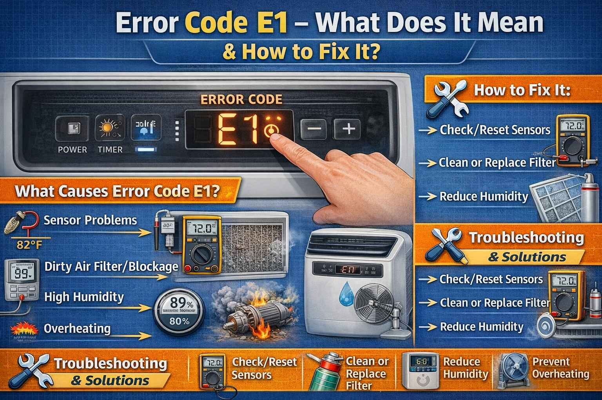

In June 2018, a family from Sahiwal contacted me. Their Haier refrigerator was showing E1 error. The fridge was not cooling properly. Food was spoiling. I asked them to check the freezer sensor. They found that ice had covered the sensor. They defrosted the fridge for 6 hours. After restarting, the error was gone. The fridge started cooling again. The mother said "You saved our Eid food. Thank you so much."
Appliance: Refrigerator | Fix: Defrost freezer, clean sensor
Error Code E1 is one of the most common error codes on appliances in Pakistan. But the meaning changes depending on the appliance and brand. This guide will help you understand what E1 means on your specific appliance and how to fix it.
First Thing to Do: When you see E1 error, try resetting the appliance first. Turn it off, unplug or switch off the circuit breaker for 10 to 15 minutes, then restart. This clears temporary glitches, especially after power fluctuations common in Pakistan.
A university student from Larkana called me in September 2024. He said "My Dawlance washing machine shows E1 error. Water is not draining. I have exams tomorrow and all my clothes are wet inside." I guided him to check the drain pump filter. He opened the bottom panel and found a coin and some lint blocking the filter. He cleaned it. The water drained. The error went away. He sent me a message saying "You saved my day. I can go to exams with clean clothes now."
Appliance: Washing Machine | Fix: Clean drain pump filter
Common Meaning: Room temperature sensor error or indoor PCB communication failure.
Room temperature sensor error
PCB communication / fan motor
High pressure protection
Indoor unit communication
Symptoms: AC runs but does not cool properly. Display shows wrong temperature. Unit may shut off.
Step by Step Fix:
Common Meaning: Freezer temperature sensor error or refrigerator compartment sensor failure.
Symptoms: Fridge not cooling properly. Incorrect temperature display. Freezer may be too cold or not cold enough.
Step by Step Fix:
Brand Specific Notes: Haier and Dawlance E1 usually means freezer sensor. Samsung and LG E1 may be fridge sensor.
A businessman from Sargodha called me in July 2020. He said "My Gree AC is showing E1 error. The AC turns on but no cooling. It is very hot in my office." I told him to check the outdoor unit. He found that the outdoor coil was completely covered in dust and cotton from nearby trees. He cleaned the coil with water. The error went away. The AC started cooling. He said "I was about to buy a new AC. You saved me 80,000 rupees."
Appliance: Gree AC | Fix: Clean outdoor condenser coil
Common Meaning: Drain error. Water is not draining from the machine.
Symptoms: Machine stops mid cycle. Water remains in the drum. Error is displayed.
Step by Step Fix:
Brand Specific Notes: Haier and Dawlance E1 means drain error. For other brands, check the manual.
Common Meaning: Door switch error or keypad problem.
Symptoms: Microwave will not start, or starts then stops.
Step by Step Fix (External Only):
Danger: Door switch replacement requires opening the microwave. High voltage risk. Call a technician.
A school teacher from Mardan messaged me in March 2025. He said "My Samsung inverter AC is showing E1 error. The outdoor unit is not working. What should I do?" I asked him to check the communication wire between indoor and outdoor units. He found that a rat had cut the wire. He repaired the wire with a connector. The AC started working. He said "I am not a technical person but you guided me step by step. Thank you brother."
Appliance: Samsung AC | Fix: Repair damaged communication wire
Common Meaning: Power supply or main board issue. Meaning varies by brand.
Symptoms: TV will not turn on, or turns on then turns off.
Step by Step Fix:
Common Meaning: Overload error. The load connected exceeds the inverter capacity.
Symptoms: Inverter beeps continuously, shuts down, shows E1.
Step by Step Fix:
Brand Specific Notes: Homage, Super Asia, Voltas, and PEL all use E1 for overload.
A woman from Okara called me in May 2019. She said "My Haier washing machine shows E1 error. There is water inside but the machine will not drain. I have children and need to wash clothes." I told her how to clean the drain filter. She did it herself. She found a small sock stuck in the filter. She removed it. The machine started draining. She said "I never knew such a small thing could cause a big problem. Thank you for teaching me."
Appliance: Washing Machine | Fix: Remove sock from drain filter
| Appliance | Meaning | Common Fix | Difficulty |
|---|---|---|---|
| AC | Room sensor / communication | Check sensor, wiring | Easy |
| Refrigerator | Freezer sensor | Replace sensor | Easy |
| Washing Machine | Drain error | Clean filter, check hose | Easy |
| Microwave | Door switch | Check door, call technician | Professional |
| TV | Power / main board | Professional diagnosis | Professional |
| Inverter | Overload | Reduce load | Easy |
Pakistan Specific Tips: Install a voltage stabilizer to protect appliances from power fluctuations. Clean sensors and filters regularly in dusty cities like Karachi and Lahore. Check for rodent damage to wires, which is common in Pakistani homes. Local repair shops are available in most cities. Ask for recommendations.
Safety Warning: Always disconnect power before any inspection. For compressor, refrigerant, microwave high voltage, or PCB issues, always call certified technicians. Electrical components can be dangerous.